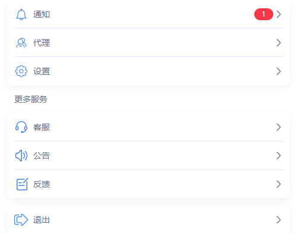

VIP配置功能需求
- 需求描述：
- 当前运营侧未开通VIP返水策略，前台页面中仍然显示与VIP返水相关内容，且无法正常使用，降低用户体验
- 而针对VIP返水入口开关当前颜色并不突出，无法有效引导用户
- 解决方案：
结合后台的的vip返水开关，当开关关掉，前台页面中VIP返水的内容均为隐藏
当开关打开，前台页面中显示VIP返水的内容并增强突出进入vip返水页面的入口
- 需求范围：
1. 前台页面：个人中心



通过后台中“会员管理”→“VIP管理”→“VIP设置”中的“VIP返水开关”
- 开关关闭时，如左图，隐藏VIP返水内容
- 开关打开时，如右图，显示VIP返水内容

※ 当前阶段若实现上述针对返水开关需求，VIP所有入口可以打开并进入，但VIP栏目内针对返水的内容也需要跟随开关进行隐藏或显示。
注：针对早起的VIP页面修改需求可放在后续再进行制作，当前所有需求均高于前期提的VIP页面修改需求